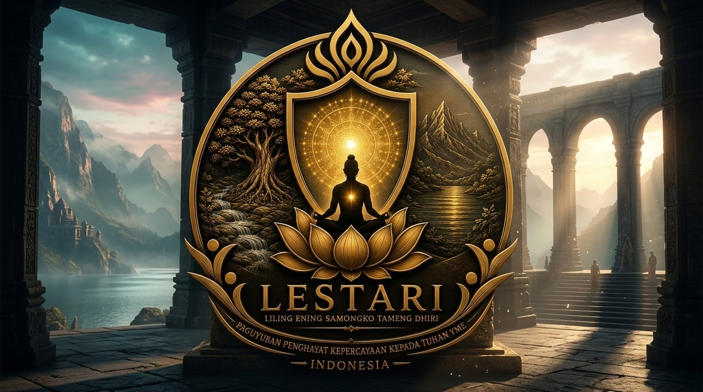

9 PRINSIP MEMAHAMI JATINING DHIRI

Memahami Hakikat Diri dalam Perspektif Kawruh Sejati.
Pembahasan tentang diri manusia sering berhenti pada hal-hal yang mudah dikenali: nama, tubuh, pikiran, perasaan, pengalaman, pekerjaan, hubungan sosial, dan berbagai identitas yang melekat dalam kehidupan. Semua itu memang merupakan bagian dari kehidupan manusia, tetapi belum menjawab pertanyaan yang lebih mendasar: apa hakikat diri manusia yang sesungguhnya?
Dalam perspektif Kawruh Sejati, pertanyaan tersebut membawa manusia pada pemahaman tentang Jatining Dhiri. Jatining Dhiri bukan sekadar identitas pribadi dan bukan pula nama lain dari raga. Jatining Dhiri berkaitan dengan kedalaman hakikat diri manusia yang berada di dalam Jiwa. Karena itu, Jatining Dhiri perlu dipahami bersama dengan Jiwa, kesadaran, cipta, rasa, karsa, serta hubungan manusia dengan panguripan.
Kerangka dasarnya dapat dirumuskan:
Jatining Panguripan
↓
Jiwa [Jatining Dhiri / Jiwatman]
↓
Kesadaran (Cetana)
↓
Cipta – Rasa – Karsa
↓
Laku kehidupan
Jatining Dhiri atau Jiwatman bukan bagian yang berdiri sendiri di bawah Jiwa. Ia merupakan bagian terdalam dari Jiwa, sedangkan Jiwa merupakan daya kehidupan rohani manusia.
Untuk memahaminya secara lebih terarah, terdapat sembilan prinsip penting.
1. Jatining Dhiri Bukan Sekadar Identitas Diri.
Prinsip pertama adalah membedakan antara identitas diri dan hakikat diri. Nama, pekerjaan, keluarga, pendidikan, kedudukan sosial, kebiasaan, dan pengalaman merupakan bagian dari identitas manusia. Namun semuanya dapat berubah. Nama dapat berubah. Pekerjaan dapat berubah. Tubuh berubah seiring waktu. Pandangan hidup dapat berkembang. Bahkan sifat dan kebiasaan seseorang pun dapat mengalami perubahan.
Karena itu, sesuatu yang terus berubah tidak dapat begitu saja dianggap sebagai keseluruhan hakikat diri. Jatining Dhiri menunjuk pada kedalaman diri yang tidak dapat direduksi hanya menjadi identitas sosial maupun pengalaman kehidupan.
Memahami prinsip ini membantu manusia tidak terjebak pada pertanyaan, "Siapa aku menurut dunia?" tetapi mulai bertanya, "Apa hakikat diriku dalam panguripan?"
2. Jatining Dhiri Berada di Dalam Jiwa
Prinsip kedua sangat penting untuk menjaga ketepatan kerangka. Jatining Dhiri atau Jiwatman merupakan bagian terdalam dari Jiwa. Jiwa merupakan daya kehidupan rohani manusia, sedangkan Jatining Dhiri menunjuk pada kedalaman hakiki dari Jiwa tersebut.
Pembedaan ini penting karena memungkinkan kita memahami Jiwa sebagai keseluruhan daya kehidupan rohani, sementara Jatining Dhiri menunjuk pada hakikat terdalam dari kehidupan tersebut.
3. Jatining Dhiri Tidak Sama dengan Raga.
Prinsip ketiga adalah memahami perbedaan antara raga dan Jiwa. Raga merupakan wahana kehidupan jasmani. Raga memungkinkan manusia bergerak, berinteraksi, melihat dunia, mendengar, berbicara, dan menjalani kehidupan secara fisik. Namun manusia tidak hanya memiliki dimensi jasmani.
Dalam kerangka Kawruh Sejati, Jiwa merupakan daya kehidupan rohani. Di dalam Jiwa terdapat Jatining Dhiri atau Jiwatman sebagai bagian terdalamnya. Dengan demikian, pengenalan Jatining Dhiri tidak cukup dilakukan dengan mengamati tubuh. Raga penting, tetapi raga bukan keseluruhan diri manusia.
Kesadaran terhadap perbedaan tersebut membantu manusia memahami bahwa kehidupan manusia memiliki dimensi yang lebih dalam daripada sekadar keberadaan fisik.
4. Jatining Dhiri Berkaitan dengan Kesadaran.
Prinsip keempat adalah memahami hubungan Jatining Dhiri dengan Cetana atau kesadaran. Kesadaran memungkinkan manusia menyadari dirinya, menyadari keadaan, mengenali pikiran, merasakan sesuatu, dan menentukan tindakan.
Namun kesadaran tidak boleh disamakan begitu saja dengan Jatining Dhiri. Dalam kerangka ini, Jatining Dhiri berada di dalam Jiwa, sedangkan kesadaran merupakan bagian dari alur perwujudan kehidupan rohani manusia.
Kerangkanya:
Jiwa [Jatining Dhiri / Jiwatman]
↓
Kesadaran (Cetana)
Karena itu, Jatining Dhiri tidak identik dengan setiap pikiran yang muncul dalam kesadaran. Manusia dapat menyadari kemarahan tanpa berarti hakikat dirinya adalah kemarahan. Manusia dapat menyadari kesedihan tanpa berarti hakikat dirinya adalah kesedihan. Kemampuan membedakan antara diri, kesadaran, dan isi kesadaran merupakan bagian penting dari pengenalan diri.
5. Jatining Dhiri Menjadi Dasar Pengenalan Diri yang Lebih Dalam.
Prinsip kelima adalah bahwa memahami Jatining Dhiri membawa manusia melampaui pengenalan terhadap dirinya secara lahiriah. Manusia dapat mengetahui banyak hal tentang dirinya: sifat, kebiasaan, kelebihan, kekurangan, pengalaman, bahkan pola pikirnya.
Namun mengetahui informasi tentang diri belum tentu sama dengan memahami hakikat diri. Kawruh Sejati mengarahkan manusia untuk melakukan mawas dhiri, yaitu melihat dirinya secara jernih dan tidak mudah tertipu oleh gambaran yang dibuatnya sendiri.
Dengan mawas dhiri, manusia mulai mampu membedakan:
● apa yang berubah dan apa yang menjadi dasar keberadaan;
● apa yang hanya pengalaman dan apa yang perlu dipahami;
● apa yang merupakan pikiran dan apa yang merupakan kenyataan;
● apa yang merupakan keinginan sesaat dan apa yang benar-benar menjadi arah kehidupan.
Dari sinilah pengenalan Jatining Dhiri menjadi lebih mendalam.
6. Jatining Dhiri Berhubungan dengan Cipta, Rasa, dan Karsa.
Prinsip keenam berkaitan dengan bagaimana kehidupan manusia diwujudkan. Setelah Jiwa [Jatining Dhiri/Jiwatman] dan kesadaran, manusia menjalani kehidupannya melalui cipta, rasa, dan karsa.
Cipta berkaitan dengan kemampuan memahami dan menimbang. Rasa berkaitan dengan kemampuan menghayati dan merasakan. Karsa berkaitan dengan kehendak yang mendorong manusia untuk bertindak. Ketiganya menjadi bagian penting dalam kehidupan manusia.
Karena itu, pemahaman tentang Jatining Dhiri tidak berhenti pada pembahasan metafisik. Ia harus terlihat dalam kualitas cipta, rasa, dan karsa. Arah pengembangannya adalah: weninging cipta, tulusing rasa, utamaning karsa.
Cipta perlu dijernihkan. Rasa perlu dituluskan. Karsa perlu diarahkan kepada keutamaan. Dengan demikian, pengenalan Jatining Dhiri memiliki hubungan langsung dengan bagaimana manusia menjalani kehidupan.
7. Jatining Dhiri Bukan Sekadar Pengalaman Batin.
Prinsip ketujuh adalah membedakan Jatining Dhiri dari pengalaman batin. Seseorang dapat mengalami ketenangan, keheningan, kebahagiaan, kesedihan, atau berbagai keadaan kesadaran. Pengalaman tersebut dapat menjadi bahan pembelajaran.
Namun pengalaman bukan otomatis merupakan Jatining Dhiri. Pengalaman adalah sesuatu yang dialami manusia. Karena itu, pengalaman perlu dipahami dengan jernih.
Kawruh Sejati tidak mengukur kedalaman pengenalan diri dari banyaknya pengalaman luar biasa yang pernah dialami seseorang. Yang lebih penting adalah apakah pemahaman tersebut membuat manusia semakin sadar terhadap dirinya, semakin mampu mawas dhiri, dan semakin baik dalam menjalani kehidupan.
Dengan demikian, Jatining Dhiri tidak menjadi objek pencarian pengalaman yang sensasional.
8. Jatining Dhiri Berkaitan dengan Guru Sejati.
Prinsip kedelapan berkaitan dengan istilah Jiwatman, Guru Sejati, dan Kawruhanta Acarya. Dalam kerangka ini: Jatining Dhiri = Jiwatman = Guru Sejati = Kawruhanta Acarya. Jiwatman menunjuk pada Jatining Dhiri sebagai bagian terdalam dari Jiwa. Dalam kedalaman tersebut terdapat makna Guru Sejati sebagai penuntun menuju Kawruh Sejati.
Guru Sejati di sini bukan figur manusia yang berdiri di luar diri dan memberikan pengetahuan seperti seorang pengajar biasa. Pemahaman ini harus ditempatkan dalam kerangka hubungan Jiwa dan kesadaran.
Jiwatman sebagai Jatining Dhiri menjadi dasar penuntunan kesadaran manusia menuju pemahaman yang lebih sejati. Karena itu, pengenalan Jatining Dhiri bukan sekadar mengenal "siapa diri saya", tetapi juga memahami arah batin menuju Kawruh Sejati.
9. Jatining Dhiri Harus Terlihat dalam Laku Kehidupan.
Prinsip terakhir adalah bahwa pengenalan terhadap Jatining Dhiri tidak berhenti pada pemahaman. Kerangka lengkapnya berakhir pada laku kehidupan: Jatining Panguripan - Jiwa [Jatining Dhiri / Jiwatman] - Kesadaran (Cetana) - Cipta, Rasa, Karsa - Laku kehidupan.
Artinya, pemahaman yang benar pada akhirnya harus memiliki perwujudan. Jika manusia memahami dirinya tetapi tetap membiarkan cipta dipenuhi kekacauan, rasa dikuasai kepentingan yang sempit, dan karsa diarahkan kepada tindakan yang merugikan, maka pengenalan tersebut belum menjadi pepadhang kehidupan.
Jatining Dhiri harus membawa manusia menuju kehidupan yang lebih sadar. Cipta menjadi lebih wening. Rasa menjadi lebih tulus. Karsa menjadi lebih utama. Laku menjadi lebih bertanggung jawab.
Di sinilah Kawruh Sejati tidak berhenti sebagai pengetahuan, tetapi menjadi pepadhang dalam menjalani panguripan.
Penutup.
Memahami Jatining Dhiri bukan sekadar mencari jawaban atas pertanyaan "siapa aku?". Jatining Dhiri menunjuk pada bagian terdalam dari Jiwa, yang disebut Jiwatman, dan dalam kerangka ini berkaitan dengan Guru Sejati atau Kawruhanta Acarya.
Jiwa merupakan daya kehidupan rohani manusia. Di dalam Jiwa terdapat Jatining Dhiri atau Jiwatman. Dari kehidupan rohani tersebut berkembang kesadaran, yang kemudian diwujudkan melalui cipta, rasa, dan karsa dalam laku kehidupan.
Dengan demikian, sembilan prinsip tersebut dapat diringkas menjadi satu pemahaman: Jatining Dhiri bukan identitas, bukan raga, bukan sekadar pikiran, dan bukan pengalaman batin. Jatining Dhiri adalah bagian terdalam dari Jiwa yang menjadi dasar pengenalan manusia terhadap hakikat dirinya.
Pengenalan tersebut tidak bertujuan membuat manusia merasa lebih tinggi daripada yang lain. Sebaliknya, semakin dalam manusia mengenali dirinya, semakin ia memahami keterbatasan dirinya, semakin mampu mawas dhiri, dan semakin mampu menjalani panguripan dengan weninging cipta, tulusing rasa, dan utamaning karsa.
FAQ - 9 Prinsip Memahami Jatining Dhiri.
1. Apa yang dimaksud dengan Jatining Dhiri?
Jatining Dhiri adalah bagian terdalam dari Jiwa yang menunjuk pada hakikat terdalam diri manusia. Dalam kerangka ini, Jatining Dhiri disebut juga Jiwatman.
2. Apa hubungan Jatining Dhiri dengan Jiwa?
Jatining Dhiri bukan sesuatu yang terpisah dari Jiwa. Jatining Dhiri atau Jiwatman merupakan bagian terdalam dari Jiwa, sedangkan Jiwa merupakan daya kehidupan rohani manusia.
3. Apakah Jatining Dhiri sama dengan kesadaran?
Tidak. Jatining Dhiri merupakan bagian terdalam dari Jiwa, sedangkan Cetana adalah kesadaran. Keduanya memiliki kedudukan dan fungsi yang berbeda dalam kerangka Kawruh Sejati.
4. Apakah Jatining Dhiri sama dengan raga?
Tidak. Raga merupakan wahana kehidupan jasmani, sedangkan Jatining Dhiri berkaitan dengan kedalaman hakikat Jiwa sebagai daya kehidupan rohani.
5. Apa hubungan Jatining Dhiri dengan cipta, rasa, dan karsa?
Cipta, rasa, dan karsa merupakan perwujudan kesadaran dalam kehidupan manusia. Pengenalan Jatining Dhiri diarahkan agar cipta menjadi wening, rasa menjadi tulus, dan karsa menjadi utama.